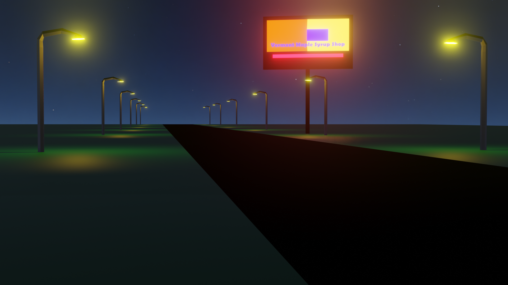
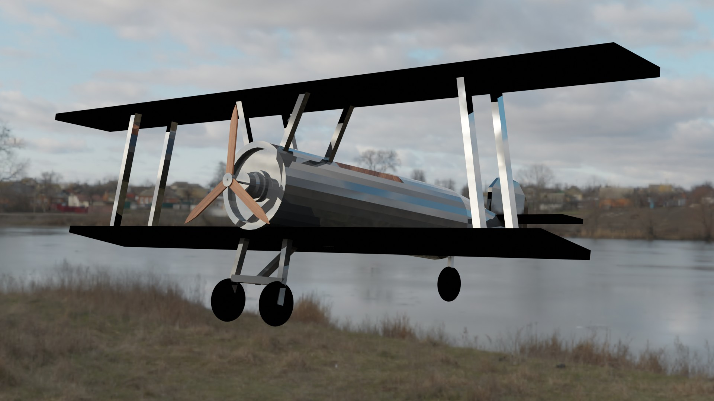
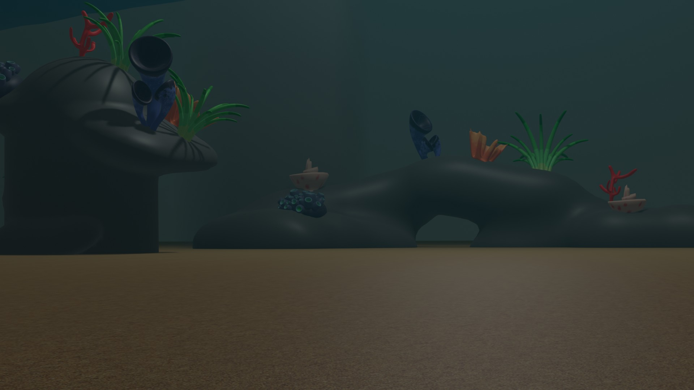
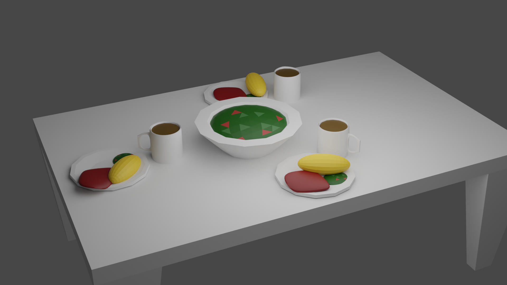
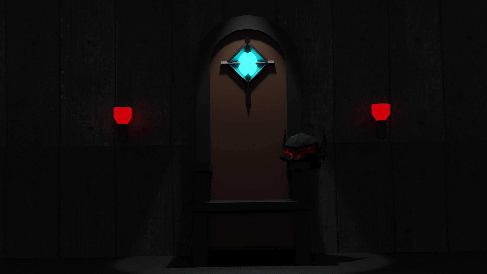
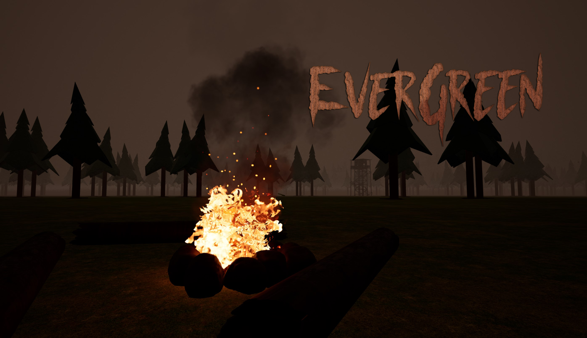
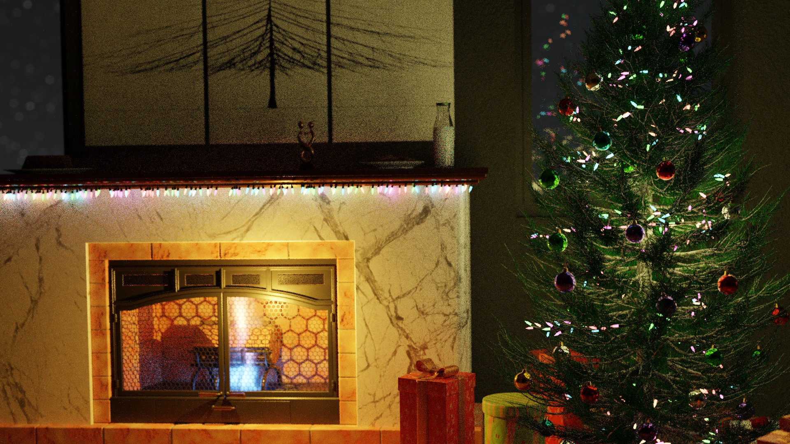

The first project here is a small project that was for a design challenge. The deliverables was just a billboard for this project but Aiden felt it needed some landscape. This project was made in 30 minutes but it still met the deliverables and more.
The next project was more of an agency for fun, It is a model of a biplane that is flying in air. Aiden has always loved airplanes and biplanes being one of his favorite models of them. So this project was one of his favorites.
This project was one made for a school project known as the Coral Reef Project. A few of the Coral models were not made by Aiden but majority were and the entire map was designed by him. The best part of this project was definitely the underwater lighting to make it feel like you are under water.
This next project was supposed to be only a Coffee Mug but Aiden had extra time to work on it so he decided to test around with some other models. He made an entire dinner scene along with the required coffee mugs.
This project was another agency project that Aiden worked on in his free time. It's supposed to be the chair for a ruler of a kingdom. This project was mainly to mess with the glow effects which is shown in the chair itself.
Evergreen was a game made for SkillsUSA and it is a VR game. This part is just the logo for the game itself. The project was a partner project and Aiden worked with his friend Nick. Aiden was the Programmer and Sound Designer and Nick was the Modeler.
The models seen here are all blenderkit but the scene itself is meant to be for interior design practice. Aiden likes making scenes, mainly inside of buildings/houses. This one was made around christmas time, hinting the christmas tree.
